"Dragon Ball" is a Japanese anime series created by Akira Toriyama. It is based on his manga of the same name
and was originally serialized in Weekly Shōnen Jump from 1984 to 1995. The anime adaptation, simply titled
"Dragon Ball," first aired in Japan from February 26, 1986, to April 19, 1989.
The story follows the adventures of Son Goku, a young and naive boy with a monkey tail, as he embarks on a
quest to find the seven Dragon Balls. These magical orbs, when gathered together, summon the wish-granting
dragon Shenron.
As the series progresses, Goku trains under different martial arts masters, participates in tournaments, and
faces formidable enemies.
Emperor Pilaf Saga
The Emperor Pilaf Saga is the initial story arc in the original "Dragon Ball" anime series. It introduces
viewers to the young and adventurous Goku as he begins his journey to find the mystical Dragon Balls. In
this saga, Goku encounters Bulma, a brilliant inventor, and the two set off together on a quest to collect
all seven Dragon Balls.
The primary antagonist of this saga is Emperor Pilaf, a diminutive and scheming ruler with ambitions of
world domination. Pilaf discovers Goku and Bulma's quest and becomes determined to steal the Dragon Balls
for himself. Along the way, Goku and Bulma befriend a shape-shifting pig named Oolong and a skilled martial
artist named Yamcha.
As the group faces various challenges and obstacles, including encounters with dangerous creatures and rival
martial artists, Emperor Pilaf becomes a persistent threat. The saga climaxes with a showdown at Pilaf's
castle, where the fate of the Dragon Balls and the world hangs in the balance.
The Emperor Pilaf Saga sets the stage for Goku's epic adventures, establishing key characters and laying the
foundation for the overarching narrative that unfolds in the subsequent arcs of the "Dragon Ball" series.
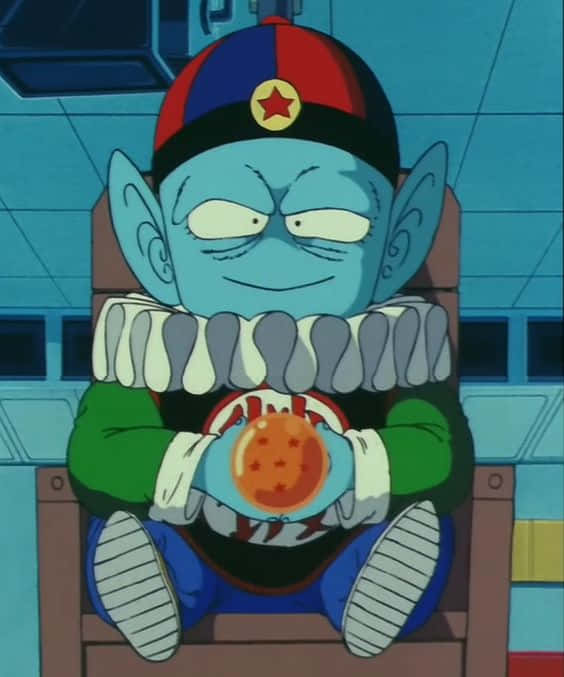
Tournament Saga
The Tournament Saga, also known as the 21st World Martial Arts Tournament Saga, is a pivotal story arc in the
original "Dragon Ball" anime series. Following the Emperor Pilaf Saga, this arc revolves around the 21st
World Martial Arts Tournament, where skilled fighters from around the world gather to test their
abilities.
Goku, having trained under the Turtle School's Master Roshi, enters the tournament alongside his friends
Krillin and Yamcha. The tournament introduces viewers to a diverse array of martial artists, including the
formidable Jackie Chun (an alias used by Master Roshi). As the
tournament progresses, Goku faces tough opponents and showcases his growing strength and combat skills.
The saga is marked by intense and entertaining martial arts battles, showcasing the diverse techniques and
abilities of the participating fighters. The climax of the arc occurs in the final match between Goku and
Jackie Chun, providing a dramatic and action-packed conclusion to the tournament. The outcome of the
tournament sets the stage for Goku's continued growth as a martial artist and the challenges that lie ahead
in the "Dragon Ball" series.
Red Ribbon Army Saga
The Red Ribbon Army Saga is a story arc in the original "Dragon Ball" anime series. It follows Goku as he
continues his quest to find the Dragon Balls, which leads him to confront the Red Ribbon Army, a powerful
military organization.
The saga introduces viewers to the Red Ribbon Army, a ruthless and powerful military organization led by
Commander Red. The Red Ribbon Army seeks to collect the Dragon Balls in order to wish for world domination.
Goku, along with his friends Bulma, Krillin, and Yamcha, must stop the Red Ribbon Army from achieving their
goal.
The saga is marked by intense battles between Goku and the Red Ribbon Army's forces, including the
formidable General Blue. The saga also introduces viewers to Android 8, a gentle and powerful android who
becomes Goku's ally. The saga culminates in a showdown between Goku and Commander Red, where the fate of the
Dragon Balls and the world hangs in the balance.
The Red Ribbon Army Saga is a pivotal arc in the "Dragon Ball" series, setting the stage for the
introduction of the Red Ribbon Army's androids and the overarching narrative that unfolds in the subsequent
arcs.
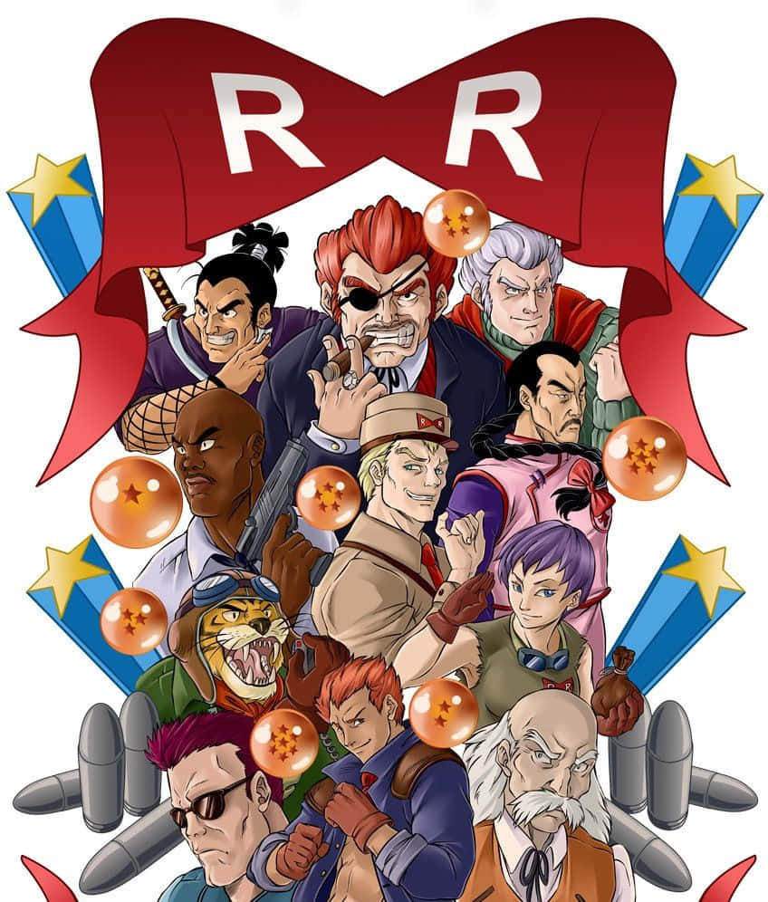
Fortuneteller Baba Saga
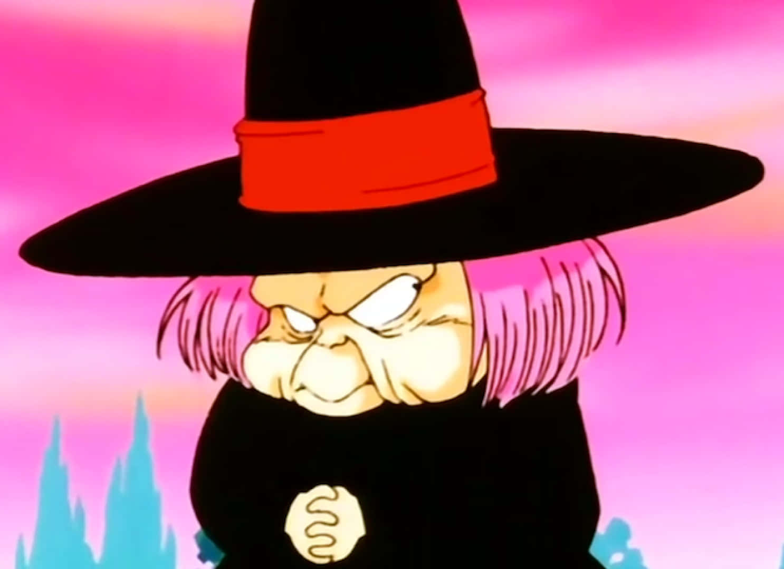
The Fortuneteller Baba Saga is a story arc in the original "Dragon Ball" anime series. It follows Goku as he
continues his quest to find the Dragon Balls, which leads him to confront Fortuneteller Baba, a powerful
witch.
The saga introduces viewers to Fortuneteller Baba, a powerful witch who can see the future. Baba agrees to
help Goku find the Dragon Balls, but only if he can defeat her five fighters in battle. Goku, along with his
friends Yamcha, Krillin, Upa, and Puar, must defeat Baba's fighters in order to obtain the Dragon Balls.
The saga is marked by intense battles between Goku and Baba's fighters, including the formidable Bandages
the Mummy. The saga culminates in a showdown between Goku and Baba, where the fate of the Dragon Balls and
the world hangs in the balance.
The Fortuneteller Baba Saga is a pivotal arc in the "Dragon Ball" series, setting the stage for the
introduction of Baba's fighters and the overarching narrative that unfolds in the subsequent arcs.
Tien Shinhan Saga
The Tien Shinhan Saga is a story arc in the original "Dragon Ball" anime series. It follows Goku as he
continues his quest to find the Dragon Balls, which leads him to confront Tien Shinhan, a powerful martial
artist.
The saga introduces viewers to Tien Shinhan, a skilled martial artist who is training under the Crane
School's Master Shen. Tien and his friend Chiaotzu are also searching for the Dragon Balls, and they
challenge Goku to a showdown at the 22nd World Martial Arts Tournament.
The saga is marked by intense battles between Goku and Tien, showcasing the diverse techniques and abilities
of the two fighters. The saga culminates in a showdown between Goku and Tien, where the fate of the Dragon
Balls and the world hangs in the balance.
The Tien Shinhan Saga is a pivotal arc in the "Dragon Ball" series, setting the stage for the introduction
of Tien and Chiaotzu and the overarching narrative that unfolds in the subsequent arcs.
King Piccolo Saga
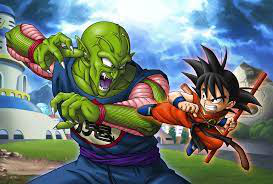
The King Piccolo Saga is a story arc in the original "Dragon Ball" anime series. It follows Goku as he
continues his quest to find the Dragon Balls, which leads him to confront King Piccolo, a powerful demon
king.
The saga introduces viewers to King Piccolo, a powerful demon king who was sealed away by Master Roshi's
master, Mutaito. King Piccolo seeks to obtain the Dragon Balls in order to wish for eternal youth and
world domination. Goku, along with his friends Tien, Chiaotzu, and Yajirobe, must stop King Piccolo from
achieving his goal.
The saga is marked by intense battles between Goku and King Piccolo's forces, including the formidable
Tambourine. The saga culminates in a showdown between Goku and King Piccolo, where the fate of the
Dragon Balls and the world hangs in the balance.
The King Piccolo Saga is a pivotal arc in the "Dragon Ball" series, setting the stage for the introduction
of Piccolo Jr. and the overarching narrative that unfolds in the subsequent arcs.
Piccolo Jr. Saga
The Piccolo Jr. Saga is a story arc in the original "Dragon Ball" anime series. It follows Goku as he
continues his quest to find the Dragon Balls, which leads him to confront Piccolo Jr., his nemesis.
The saga introduces viewers to Piccolo Jr., Goku's nemesis and the son of King Piccolo. Piccolo Jr. seeks
to avenge his father's death by defeating Goku in battle. Goku, along with his friends Tien, Chiaotzu, and
Yajirobe, must stop Piccolo Jr. from achieving his goal.
The saga is marked by intense battles between Goku and Piccolo Jr., showcasing the diverse techniques and
abilities of the two fighters. The saga culminates in a showdown between Goku and Piccolo Jr., where the
fate of the Dragon Balls and the world hangs in the balance.
The Piccolo Jr. Saga is a pivotal arc in the "Dragon Ball" series, setting the stage for the introduction
of Piccolo Jr. and the overarching narrative that unfolds in the subsequent arcs.
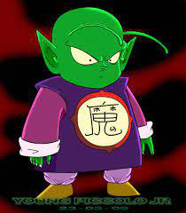
Dragon Ball Z
Introduction to Dragon Ball Z
"Dragon Ball Z" is a Japanese anime series created by Akira Toriyama. It is based on his manga of the same
name and was originally serialized in Weekly Shōnen Jump from 1988 to 1995. The anime adaptation, simply
titled "Dragon Ball Z," first aired in Japan from April 26, 1989, to January 31, 1996.
The story follows the adventures of Son Goku, a powerful warrior with a monkey tail, as he defends the Earth
from various threats. Along the way, Goku trains under different martial arts masters, participates in
tournaments, and faces formidable enemies.
"Dragon Ball Z" is the sequel to the original "Dragon Ball" anime series.
Raditz Saga
The Raditz Saga is a pivotal story arc in the "Dragon Ball Z" series, the sequel to the original "Dragon
Ball" anime. This saga marks a significant shift in the narrative and introduces the concept of Saiyans, a
powerful warrior race from outer space.
The story begins with the arrival of Raditz, Goku's long-lost brother, who reveals Goku's Saiyan heritage
and his true name, Kakarot. Raditz informs Goku that he is a Saiyan sent to Earth as a baby to conquer the
planet, but a head injury as a child caused him to lose his violent nature. Raditz attempts to recruit Goku
for their mission, but Goku refuses, leading to a fierce battle between the two Saiyan brothers.
Recognizing the impending threat, Goku's friends and former rivals, including Piccolo, Krillin, Yamcha,
Tien, and Chiaotzu, join forces to confront Raditz. Unfortunately, Raditz proves to be a formidable
opponent, forcing Goku and Piccolo to form an uneasy alliance to defeat him. The battle results in a
sacrifice as Goku holds Raditz in place, allowing Piccolo to deliver a fatal blow to both of them.
The fallout from the Saiyan Saga sets the stage for even greater challenges, as it is revealed that two more
powerful Saiyans, Vegeta and Nappa, are on their way to Earth. The saga ends with the remaining Z Fighters
preparing for the imminent arrival of these formidable adversaries, laying the groundwork for the epic
battles and transformations that define the subsequent arcs of "Dragon Ball Z.
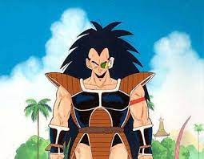
Vegeta Saga
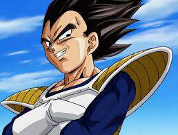
The Vegeta Saga in "Dragon Ball Z" follows the arrival of Saiyan warriors Vegeta and Nappa on Earth. The Z
Fighters, Goku's allies, confront the invaders in intense battles, resulting in significant casualties.
Goku, after training with King Kai, returns for a climactic showdown with Vegeta, showcasing powerful
transformations and techniques. Goku emerges victorious, but Vegeta narrowly escapes, setting the stage for
the escalating threats and epic battles that define the series.
Namek Saga
The Namek Saga in "Dragon Ball Z" unfolds as Earth's defenders, the Z Fighters, embark on a quest to find the
Dragon Balls on Planet Namek. Their mission is driven by the desire to resurrect fallen friends and thwart
the looming threat of two powerful foe Vegeta, who also seeks the Dragon Balls for his own
purpose.
The Namek Saga is notable for its high-stakes battles, the introduction of Super Saiyan transformations,
the dramatic turning point that shapes the future of the "Dragon Ball Z" series and the beginning of a new
chapter in the ongoing struggle against powerful foes.
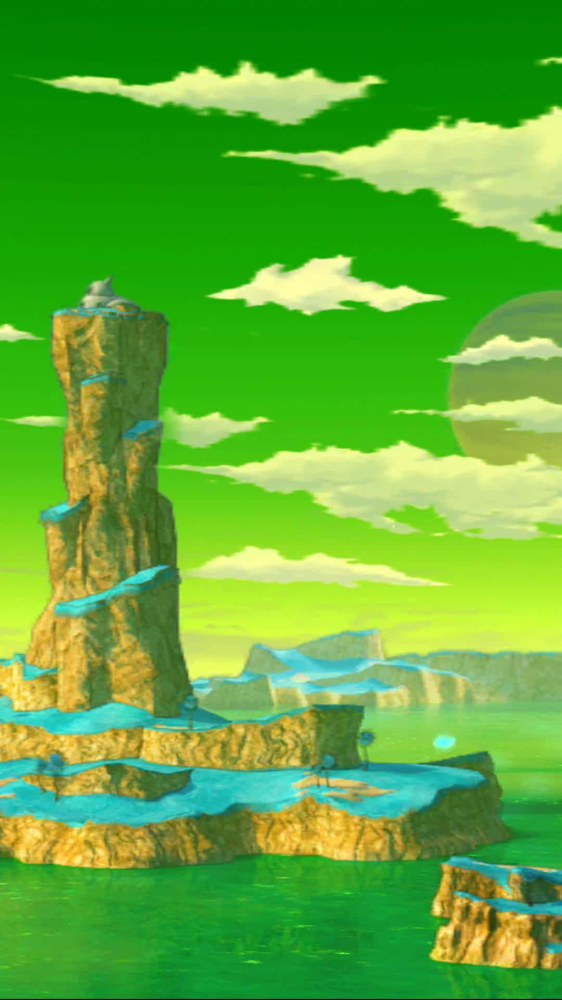
Captain Ginyu Saga
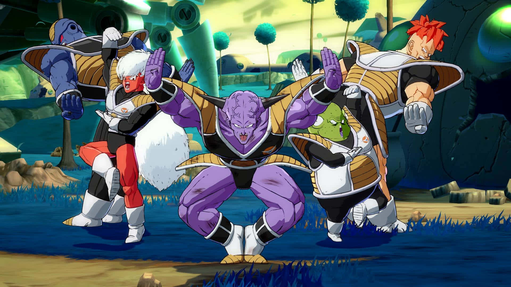
The Captain Ginyu Saga in "Dragon Ball Z" follows the arrival of the Ginyu Force, a team of powerful
mercenaries hired by Frieza to conquer Planet Namek. The Z Fighters, Goku's allies, confront the invaders
in intense battles, resulting in significant casualties. Goku, after training in 100times gravity, returns
for a
climactic showdown with Captain Ginyu, showcasing powerful transformations and techniques. Goku emerges
victorious, but Captain Ginyu narrowly escapes, setting the stage for the escalating threats and epic
battles that define the series.
Frieza Saga
The Frieza Saga in "Dragon Ball Z" is a pivotal arc that centers around the Z Fighters' confrontation with
the ruthless tyrant, Frieza, on the planet Namek. As Frieza seeks the Dragon Balls for immortality, Goku and
his allies engage in intense battles against Frieza's powerful henchmen, the Ginyu Force. Goku's arrival and
subsequent transformation into a Super Saiyan mark a critical turning point in the saga.
The climax features an epic battle between Goku and Frieza, showcasing the devastating power of the Super
Saiyan form. The saga concludes with the dramatic destruction of Planet Namek, leaving the fate of Goku and
Frieza uncertain. The Frieza Saga is notable for its emotional intensity, iconic moments, and the
introduction of the Super Saiyan concept, solidifying its status as a landmark storyline in the "Dragon Ball
Z" series.
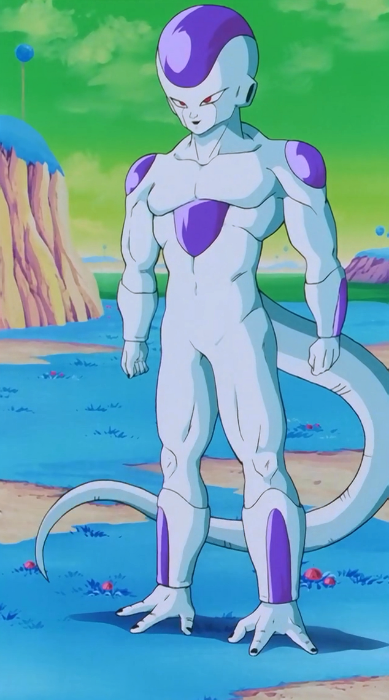
Garlic Jr. Saga
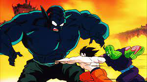
The Garlic Jr. Saga is a filler arc in "Dragon Ball Z" that deviates from the main storyline. It revolves
around Garlic Jr., an immortal and malevolent being, seeking revenge against Kami and the Earth. Garlic Jr.
uses the Black Water Mist to turn Earth's inhabitants into mind-controlled minions, leading to chaos and
conflict.
Gohan, Krillin, and Piccolo become the primary defenders against Garlic Jr.'s forces. The saga climaxes with
a battle against Garlic Jr. and his henchmen in the Dead Zone, a dimension he controls. Gohan plays a
crucial role in defeating Garlic Jr., utilizing his latent power.
Though considered non-canon, the Garlic Jr. Saga provides additional character development for Gohan and
showcases his growing strength. The saga concludes with the restoration of normalcy on Earth, and the Z
Fighters resume their focus on impending threats.
Trunks Saga
The Trunks Saga in "Dragon Ball Z" is a brief yet impactful storyline. It begins with the mysterious arrival
of a time-traveling warrior named Trunks, who warns the Z Fighters of an impending threat: the androids.
Trunks reveals that in his future, these androids wreak havoc, causing widespread devastation and the death
of many Z Fighters.
As the Z Fighters prepare for the android threat, the saga unfolds with the chilling realization that Goku
will succumb to a heart virus before the androids' arrival. Trunks provides Goku with an antidote from the
future, altering the timeline.
The saga culminates in the arrival of the androids, leading to intense battles and unexpected developments.
Trunks' identity as the son of Vegeta and Bulma is revealed, and his Super Saiyan transformation
demonstrates the power that the Z Fighters must attain to survive the android onslaught.
The Trunks Saga sets the stage for the Android Saga and introduces Trunks as a key character whose actions
have significant implications for the future of the "Dragon Ball Z" series.
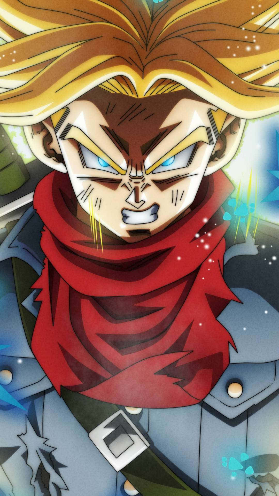
Androids Saga
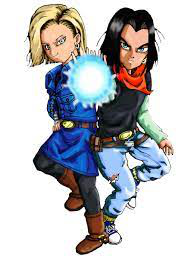
The Androids Saga in "Dragon Ball Z" is a pivotal storyline that follows the Z Fighters' battle against the
androids created by the villainous Dr. Gero. Trunks' warning about the android threat proves accurate as
Androids 19 and 20 (Dr. Gero himself) unleash chaos on the Earth.
The Z Fighters engage in fierce battles against the androids, but the situation takes a drastic turn when
the more powerful Androids 17 and 18 are activated. Despite their efforts, the Z Fighters struggle against
the relentless androids, leading to casualties and moments of despair.
The Androids Saga is marked by intense battles, strategic maneuvering, and the exploration of the
consequences of altering timelines. It sets the foundation for the Cell Saga and continues to shape the
evolving narrative of "Dragon Ball Z."
Imperfect Cell Saga
The Imperfect Cell Saga in "Dragon Ball Z" follows the emergence of Cell, an android seeking to achieve his
perfect form by absorbing Androids 17 and 18. Dr. Gero's bio-engineered creation, Cell, initially appears in
an imperfect form and begins absorbing humans to increase his strength.
The Z Fighters, led by Future Trunks and Vegeta, engage in battles against Imperfect Cell to prevent him
from reaching his full potential. Meanwhile, Androids 17 and 18 remain the primary targets of Cell's
absorption, leading to intense confrontations.
The saga is marked by the Z Fighters' efforts to thwart Cell's plans and the realization that the threat
goes beyond the androids. Imperfect Cell's relentless pursuit of perfection creates a sense of urgency and
sets the stage for the escalating challenges in the subsequent Cell Saga.
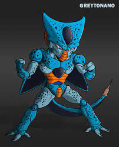
Perfect Cell Saga
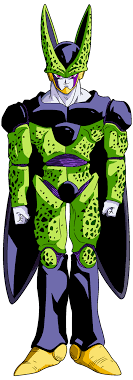
The Perfect Cell Saga in "Dragon Ball Z" revolves around the culmination of Cell's quest for perfection.
After absorbing Androids 17 and 18, Cell achieves his Perfect Form, becoming an immensely powerful
adversary. The saga features intense battles between Cell and the Z Fighters, including Goku, Gohan, Vegeta,
and others.
The Perfect Cell Saga is known for its high-stakes battles, character development, and the exploration of
themes such as sacrifice and the consequences of unchecked power. It serves as a pivotal arc in the "Dragon
Ball Z" series, setting the stage for the subsequent events.
Cell Games Saga
The Cell Games Saga in "Dragon Ball Z" follows the culmination of Cell's quest for perfection. After
absorbing Androids 17 and 18, Cell achieves his Perfect Form, becoming an immensely powerful adversary. The
saga features intense battles between Cell and the Z Fighters, including Goku, Gohan, Vegeta, and others.
The Cell Games Saga is known for its high-stakes battles, character development, and the exploration of
themes such as sacrifice and the consequences of unchecked power. It serves as a pivotal arc in the "Dragon
Ball Z" series, setting the stage for the subsequent events.
Other World Saga
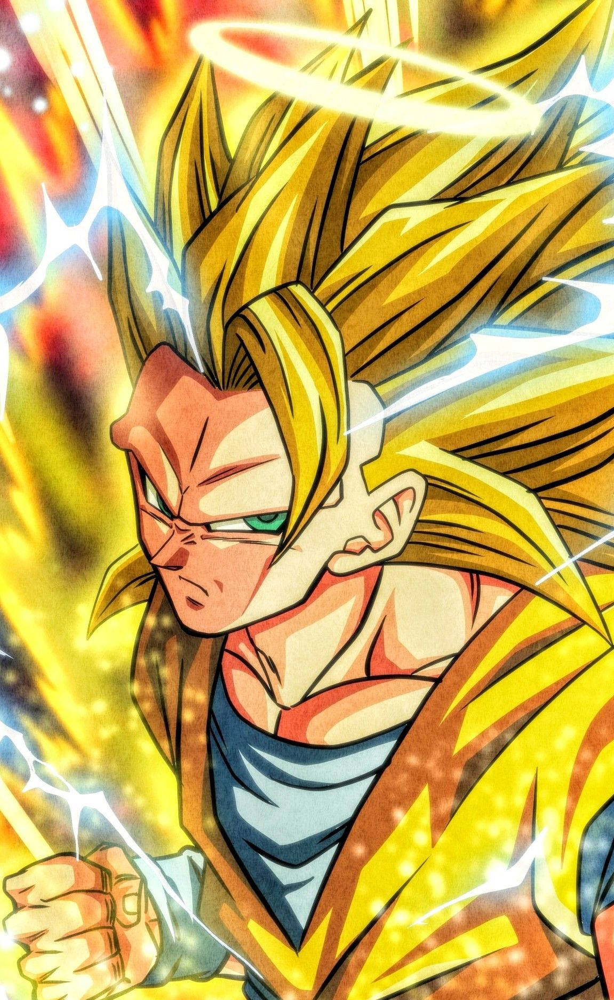
The Other World Saga in "Dragon Ball Z" follows Goku's journey through the Other World, a realm inhabited by
deceased beings. After sacrificing himself to save the Earth from Cell, Goku finds himself in the Other
World, where he trains under King Kai.
The saga is marked by Goku's training and his encounters with various characters, including the Other World
Tournament fighters and the villainous Janemba. The saga culminates in a battle between Goku and Janemba,
showcasing Goku's growth and the power of his Super Saiyan 3 transformation.
The Other World Saga is notable for its exploration of the afterlife and its focus on Goku's training and
character development. It sets the stage for the subsequent events in the "Dragon
Ball Z" series.
Great Saiyaman Saga
The Great Saiyaman Saga in "Dragon Ball Z" follows the Z Fighters' return to Earth after the events of the
Cell Games. The saga is marked by the introduction of Gohan's superhero alter ego, the Great Saiyaman, and
his efforts to balance his superhero life with his studies.
The saga also features the introduction of Videl, Gohan's classmate and the daughter of Mr. Satan. Videl
becomes suspicious of Gohan's identity as the Great Saiyaman and attempts to uncover the truth.
The Great Saiyaman Saga is notable for its focus on Gohan's character development and the introduction of
Videl as a key character. It sets the stage for the subsequent events in the "Dragon Ball Z" series.